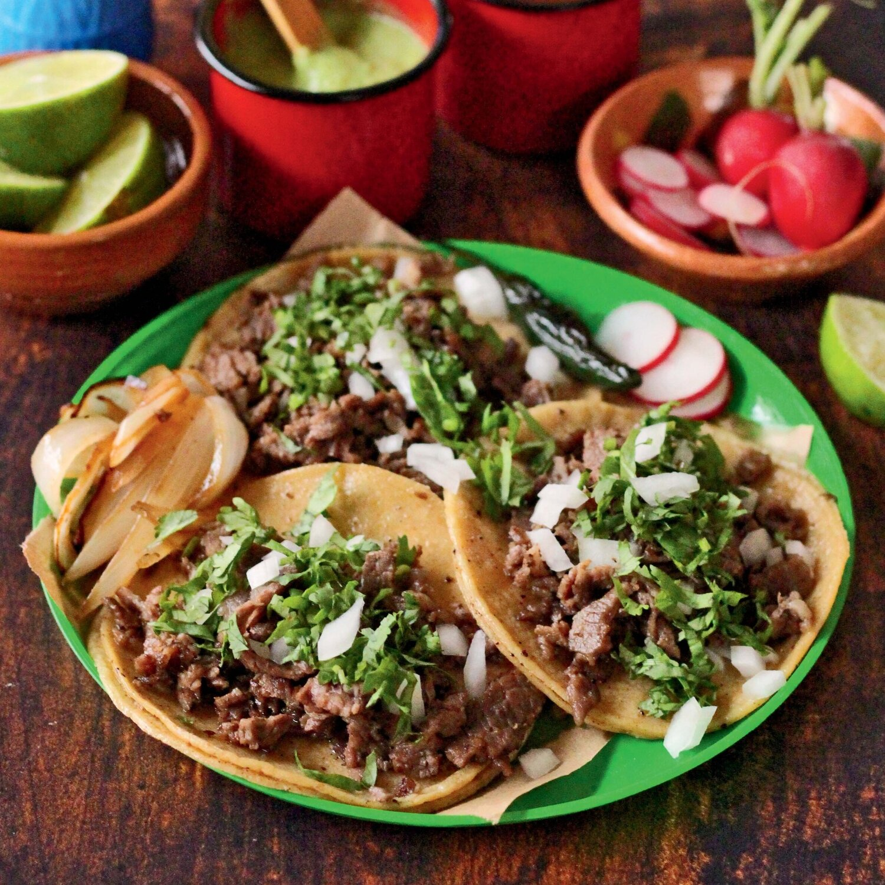

<<<<<<< HEAD
=======
Tacos
Tacos

Description
This recipe is a favorite amongst many people in both Mexico and the United States alike. It's simple, satisfying, and savory.
It can be found anywhere from restuarants to late night food vendors. No matter the person, these tacos are sure to hit.
Ingredients
- 2 pounds thinly sliced ribeye or sirloin
- 12 Corn Tortillas
- 1 tablespoon vegetable oil
- 1 medium onion finels chopped
- 1 bunch of cilantro finely chopped
- Salt and pepper to taste
- Salsa of your choosing
Steps
- On a heavy skillet at medium high heat add the vegetable oil. Place the steak when the oil is hot and brown the steaks.
- Cook for about 2 minutes and turn. If you are making several steaks, wrap the cooked ones in aluminum foil and keep warm in an oven while you finish cooking the rest of the
steaks. Do not over cook.
- While the steaks finish cooking, start warming the tortillas in a medium heat skillet and wrap them in a kitchen towel.
- Chop the meat into small pieces and place some of the meat into each warm tortilla. (Some taco stands warm their tortillas in the same skillet the
meat was cooked to absorb the flavor and some also add more oil to the skillet while warming the tortillas). Top each taco with the chopped onion and cilantro.
- Add the chopped steak to the skillet. Mix and serve on warm corn tortillas, top with chopped cilantro and onion. Now, you are ready to enjoy a real taco!
>>>>>>> 4cc5582 (initial commit of 3 recipe htmls and 4 images)